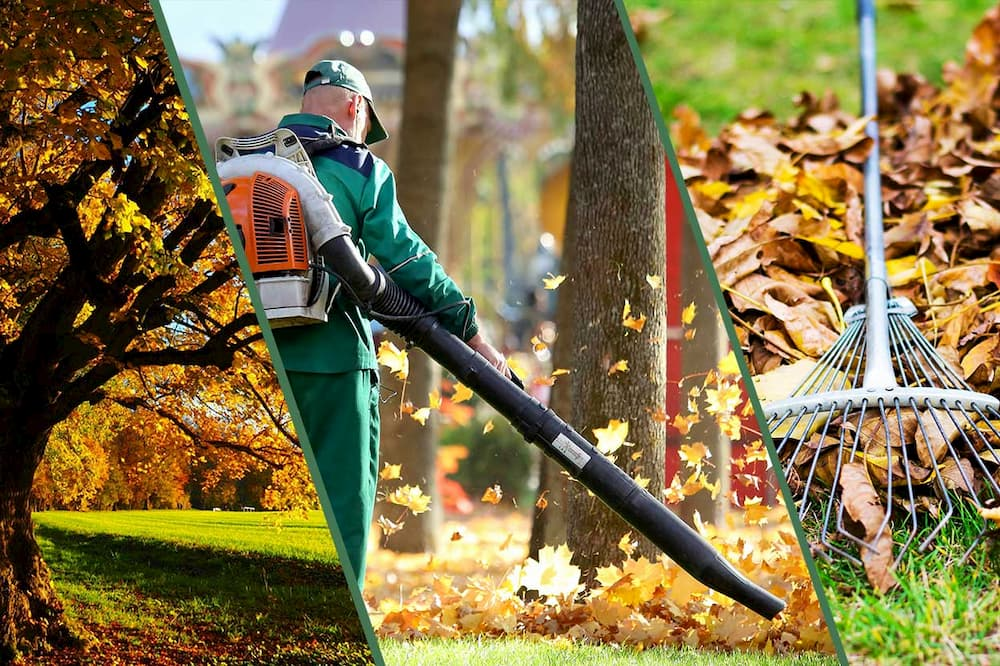

The Importance of Lawn Cleaning
Having a clean and well-maintained lawn not only improves the aesthetics of your home but also promotes a healthy environment. Regular lawn cleaning is essential to prevent pests, encourage proper growth, and enhance the overall look of your outdoor space.
Why Lawn Cleaning Matters
Over time, leaves, debris, and dead grass accumulate, which can lead to soil compaction, mold growth, and unwanted insects. Cleaning your lawn frequently prevents these issues and keeps your garden looking vibrant.

Top Benefits of Regular Lawn Maintenance
- Prevents pest infestations
- Enhances the growth of grass and plants
- Improves air circulation in the soil
- Increases property value
Eco-Friendly Lawn Cleaning Tips
Instead of using chemical-based products, opt for natural fertilizers and composting methods to maintain a healthy and organic lawn. Consider mulching leaves instead of raking to enrich the soil naturally.
Best Tools for Lawn Cleaning
Invest in high-quality rakes, leaf blowers, and lawn vacuums to make the process more efficient. Robotic lawnmowers are also a great option for automated upkeep.

When Should You Clean Your Lawn?
The best times for thorough lawn cleaning are during early spring and autumn. These seasons provide the ideal conditions for preparing your yard for healthy growth.
Professional Lawn Cleaning Services
If you don't have the time or tools to maintain your lawn, consider hiring professionals like Sweet Home. Our experts ensure your lawn stays in top shape, giving you a lush and well-maintained yard.